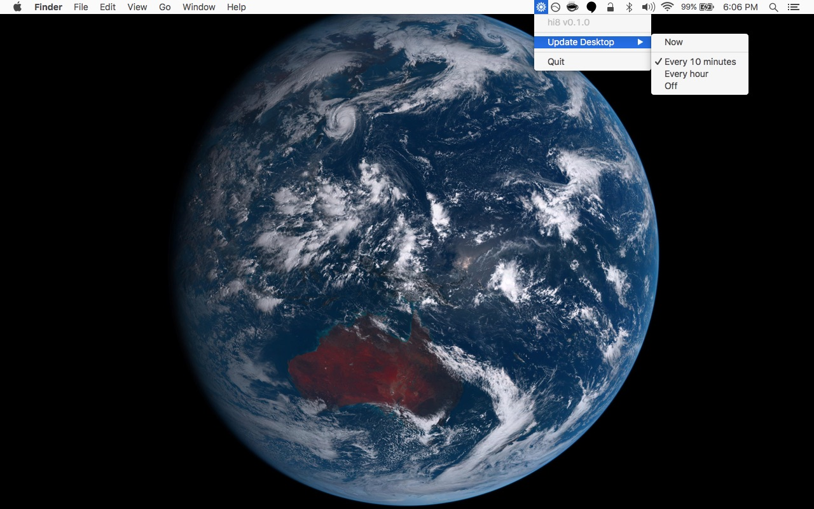

hi8
See Earth from Himawari-8 on your desktop every 10 minutes.


About
“Himawari” (ひまわり) is Japanese for “sunflower”. 🌻
Himawari 8 is a geostationary weather satellite deployed by the Japan Meteorological Agency. It takes photographs of Earth every 10 minutes.
hi8 is a macOS menubar app that sets the latest image from Himawari-8 as your desktop background every 10 minutes.

This project is alpha quality, please report any bugs! and maybe fix them! 😁
Install
For now, you can install hi8 via npm.
npm install -g hi8
In the future, hi8 will be packaged as an app and downloadable via the releases page.
Warning: requires ⚡️ magick ⚡️
If you have homebrew installed, you can brew install imagemagick graphicsmagick.
If you know of a better (dependency-free) way to process the images (or package imagemagick and graphicsmagick with the application), please let me know!
Usage
hi8
Contributing
Contributions welcome! Please read the contributing guidelines first.
Change Log
This project has a change log!
Credit
Sunflower icon created by Federico Panzano from Noun Project. Used under the CC BY 3.0 US license.
Resources
Here are some useful links if you’re interested in learning more about the Himawari-8 satellite.
Official
- Himawari-8 Real-time Web
- Himawari Data Guide
- Himawari-8/9 Standard Data User’s Guide
- JAXA account registration (for access to more data)
Related Projects
- Glittering Blue
- celoyd/hi8
- Himawari 8 animation tutorial
- deband python script
- makeaday bash script
- himawari.js
- himawari-bg
- himawari-urls
- himawari-history